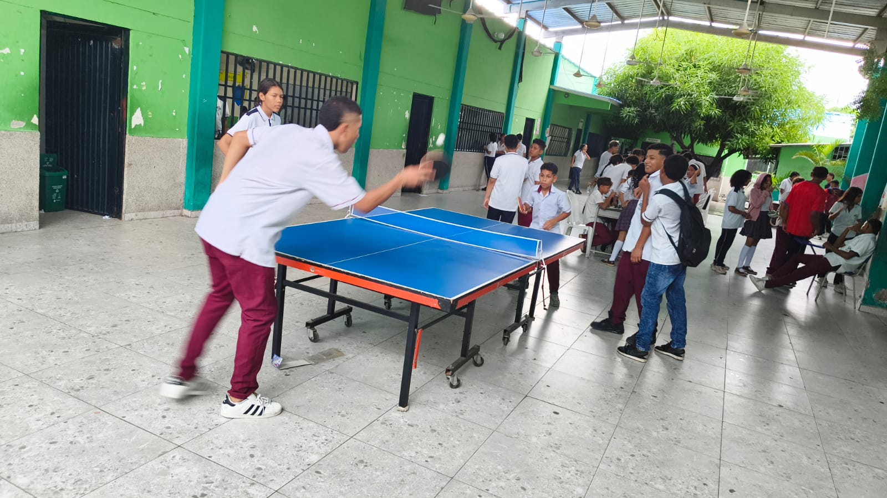

Deportes y ConvivenciaProyecto Transversal de Tiempo Libre: Jornada Lúdico-Deportiva en el Patio Techado
Estudiantes carmelistas vivieron una jornada de integración, motricidad y recreación formativa liderada por el docente Samir Sandoval, fortaleciendo la sana convivencia y el uso constructivo del tiempo libre escolar.